Cercul trigonometric
Ce este cercul trigonometric?
Definiția TG1: Cercul trigonometric
Cercul trigonometric este cercul cu centrul în originea reperului cartezian și de rază o unitate. El este notat cu sau, mai simplu cu .
Observație:
Sensul de parcurgere în cercul trigonometric este unul pozitiv, adică invers acelor de ceasornic.
Într-un reper cartezian, graficul unui cerc trigonometric este:

După cum observăm și în figura anterioară, axa  este axa cosinus, iar axa
este axa cosinus, iar axa  este axa sinus.
este axa sinus.
Lungimea cercului unitate este de .
Fie un unghi din intervalul . Atunci lui îi corespunde un punct  situat pe cerc.
situat pe cerc.
În funcție de poziția acestui pe cerc, avem următoarele cazuri:
- Dacă aparține primului cadran, atunci ;
- Dacă aparține celui de-al doilea cadran, atunci 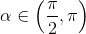;
- Dacă aparține celui de-al treilea cadran, atunci ;
- Dacă aparține celui de-al patrulea cadran, atunci .
Definirea funcțiilor trigonometrice pe cercul trigonometric și pe axa reală
Funcția sinus
Fie funcția ,  .
.
Graficul acestei funcții este rezentat în figura de mai jos:
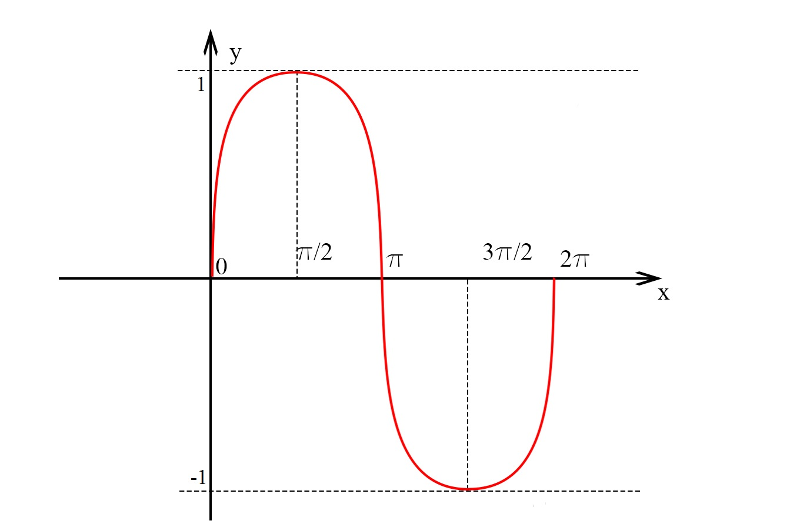
Deoarece funcția sinus este o funcție periodică, putem să o studiem pe toată mulțimea numerelor reale.
În plus, se observă că funcția sinus ia valori doar pe intervalul ![[ -1,1 ]](../../media/webbooks/443/3065/images/equations/s25xzxttauhqicvcohgqlw==.gif) .
.
Astfel avem funcția .
Sunt câteva valori de unghiuri importante pe care le vom trata în tabelul următor:

Graficul funcției sinus pe  este:
este:
Proprietățile funcției sinus
- Intersecția cu axele
- în puncte de forma 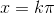,
 .
. - în punctul
 .
.
- în puncte de forma 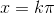,
- Paritate
Funcția sinus este o funcție impară, adică .
- Periodicitate
Funcția sinus este o funcție periodică, de perioadă principală , adică , .
- Monotonie
Vom studia monotonia pe intervalul .

După cum observăm din tabel, funcția sinus este:
- strict crescătoare pe ;
- strict descrescătoare pe .
În cazul general putem spune că funcția sinus este:
- strict crescătoare pe 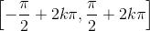;
- strict descrescătoare pe .
- Mărginire
Funcția sinuns este mărginită, pentru că  .
.
- Semnul funcției
În general, avem că:
Funcția cosinus
Fie funcția , .
Graficul acestei funcții este reprezentat în firgura de mai jos:
Se observă faptul că, la fel ca și la funcția sinus, funcția cosinus ia valori doar pe intervalul .
Deoarece funcția cosinus este o funcție periodică putem să o studiem pe toată mulțimea numerelor reale.
Astfel, avem funcția , .
În tabelul următor sunt câteva valori de unghiuri importante:

Graficul funcției cosinus pe axa numerelor reale este:
Proprietățile funcției cosinus
- Intersecția cu axele
- în puncte de forma , ;
- în punctul 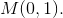
- în puncte de forma ,
- Paritate
Funcția cosinus este o funcție pară, adică .
- Periodicitate
Funcția cosinus este o funcție periodică, de perioadă , adică , .
- Monotonie
Vom studia monotonia pe intervalul .

După cum observăm din tabel, funcția cosinus este:
- strict crescătoare pe :
- strict descrescătoare pe
![\left[0,\pi\right]](../../media/webbooks/443/3065/images/equations/dc1bhhoy185tn72xhy8m2g==.gif)
În cazul general putem spune că funcția cosinus este:
- strict crescătoare pe
![\left[\pi+2k\pi,2\pi+2k\pi\right]](../../media/webbooks/443/3065/images/equations/7r1kfhiwg4xu9ewxwgf-wq==.gif) ;
; - strict descrescătoare pe .
- Mărginire
Funcția cosinuns este mărginită, pentru că .
- Semnul funcției
În general avem că:
Funcția tangentă
Fie funcția , .
Graficul acestei funcții este:
Deoarece funcția tangentă este o funcție periodică putem să o studiem pe toată mulțimea numerelor reale.
Astfel avem funcția , .
În tabelul următor sunt valori ale tangentei pentru câteva unghiuri importante:

Pentru funcția tangentă, graficul pe axa numerelor reale este:
Proprietățile funcției tangentă
- Intersecția cu axele
- în puncte de forma , ;
- în punctul .
- în puncte de forma ,
- Paritate
Funcția tangentă este o funcție impară, adică  .
.
- Periodicitate
Funcția tangentă este o funcție periodică, de perioadă principală adică  , .
, .
- Monotonie
Din graficul funcției putem observa că funcția tangentă este o funcție strict crescătoare.
- Mărginire
Funcția tangentă este nemărginită.
- Semnul funcției
Din definiția funcției tangentă, putem să deducem că semnul acestei funcții depinde de semnul funcțiilor deja amintite: sinus și cosinus.
Dacă ne uităm la proprietățile funcțiilor amintite, putem deduce că:
Funcția cotangentă
Fie funcția , .
Graficul acestei funcții este:
Deoarece funcția cotangentă este o funcție periodică, putem să o studiem pe toată mulțimea numerelor reale.
Astfel avem funcția , .
În tabelul următor sunt câteva valori de unghiuri importante pentru funcția cotangentă:

Graficul cotangentei pe este redat în imaginea următoare:
Proprietățile funcției cotangentă
- Intersecția cu axele
- în puncte de forma , ;
- nu intersectează axa .
- în puncte de forma ,
- Paritate
Funcția cotangentă este o funcție impară, adică .
- Periodicitate
Funcția cotangentă este o funcție periodică, de perioadă principală adică , ..
- Monotonie
Din graficul funcției putem observa că funcția cotangentă este o funcție strict descrescătoare.
- Mărginire
Funcția cotangentă este nemărginită.
- Semnul funcției
Din definiția funcției cotangentă putem să deducem că semnul acestei funcții depinde de semnul funcțiilor deja amintite: sinus și cosinus.
Dacă ne uităm la proprietățile funcțiilor amintite deducem că:
Toate aceste funcții trigonometrice au fost abordate și detaliate în ghidul Funcții elementare, mai precis, în cadrul subcapitolului Funcții trigonometrice directe și inverse.
Exercițiu rezolvat
Să se stabilească semnul următoarelor trei numere:
.
Rezolvare:
Vom folosi periodicitatea acestor funcții; astfel obținem:
Deoarece sinus și cosinus au perioada principală  , iar tangenta , ne rezultă că:
, iar tangenta , ne rezultă că:
Analizând poziția acestor numere pe cercul trigonometric, observăm că:
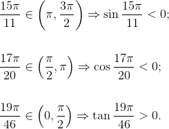
Formula fundamentală a trigonometriei
Un rezultat important în trigonometrie este faptul că pentru orice , avem:
Acest rezultat poartă numele de formula fundamentală a trigonometriei.
Demonstrație:
Dacă , atunci punctul .
Cunoaștem ecuația cercului :
.
Facem substituția:
.
Obținem relația:
.
Observație:
Cu ajutorul formulei fundamentale a trigonometriei putem calcula sinus în funcție de cosinus și invers, cosinus în funcție de sinus astfel:

și
Funcțiile sinus și cosinus pe cercul trigonometric în cazuri particulare
În această secțiune vom învăța să citim ușor multipli de , și .
Pentru aceasta, vom desena un cerc trigonometric și vom evidenția pe rând acești multipli.
Multiplii de ( π / 6)
În primul rând să ne amintim că:
Atunci, calculăm și funcțiile tangentă și cotangentă:

Să citim acum multiplii de evidențiați în desen și să le calculăm sinusul, cosinusul, dar și tangenta și cotangenta:
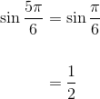

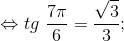
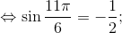
Multiplii de ( π / 4 )
Procedând similar cazului de mai sus, să ne amintim că:
Atunci:


Să citim acum multiplii de evidențiați în desen și să le calculăm sinusul, cosinusul, tangenta și cotangenta:
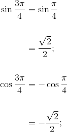

Multiplii de ( π / 3 )
La fel cum am procedat la celelalte cazuri particulare, ne amintim că:
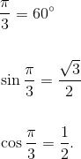
Atunci, obținem:


În continuare, vom citi multiplii lui și le vom calcula sinusul, cosinusul, tangenta și cotangenta.